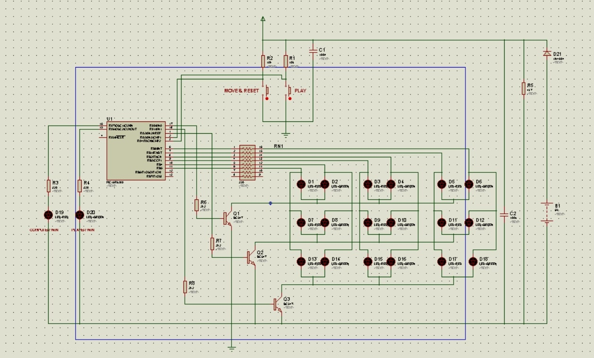
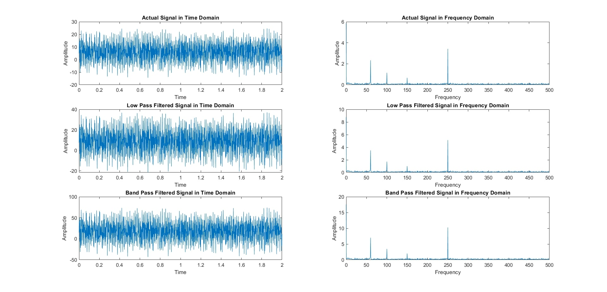
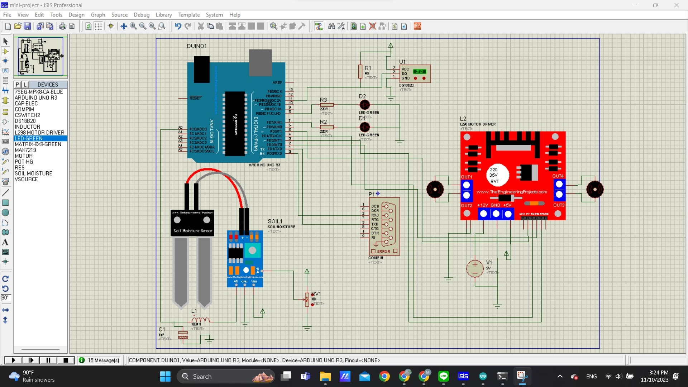
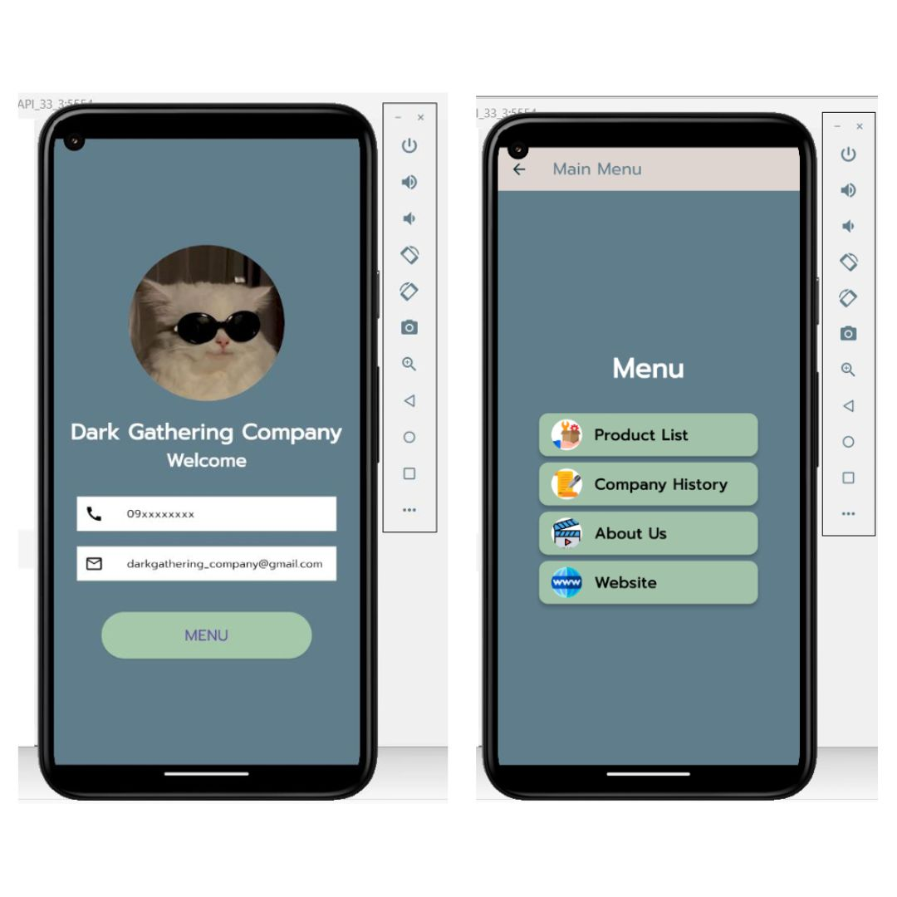

Your journey to learn more about me starts here!
Here are some of the projects I have worked on:
Tic-tac-toe is a 2-player game where players mark X and O on a 3×3 grid, aiming to get 3 in a row to win. We’ve developed a solo version that doesn’t require two players. (Using Assembly and ISIS7)
Digital Signal Processing (DSP) uses digital tools to analyze and improve signals. The Discrete Fourier Transform (DFT) finds frequency components, while the Fast Fourier Transform (FFT) and FIR Filters manage complex signals and enhance quality. This project explores these techniques, demonstrates filter design, and highlights FFT's role in frequency analysis, using MATLAB.
The Arduino system uses an L296 motor driver, soil moisture sensor, DS18B20 temperature sensor, and Node-RED. Arduino controls door motors, manages lights, monitors soil moisture and temperatures, and sends data to Node-RED. Node-RED displays data, controls actions, and automates tasks based on sensor inputs.
Creating a web app with Flutter and testing it on a simulator involves developing the web application using Flutter and verifying its compatibility with mobile devices through an emulator. Testing on a mobile simulator helps ensure that the UI and functionality are properly adapted for smaller screen sizes.
